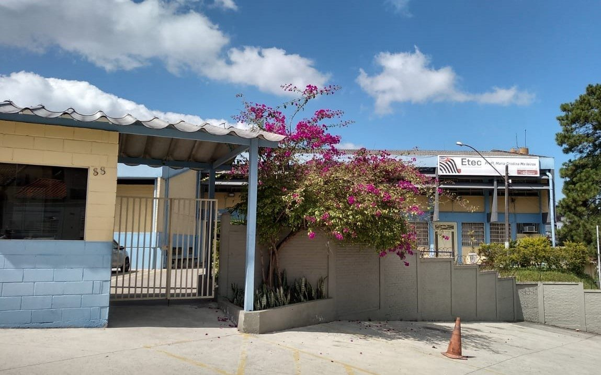

Etec
Etec
Foco na Etec
Entenda como funciona a escola técnicaica, o Vestibulinho e por que um curso técnico pode mudar a sua trajetória ainda no Ensino Médio.
As Escolas Técnicas Estaduais (ETECs) oferecem cursos técnicos profissionalizantes gratuitos, vinculados ao Centro Paula Souza (SP). Você pode cursar durante ou depois do Ensino Médio.
É o processo seletivo da ETEC. Geralmente acontece duas vezes ao ano, com prova objetiva de Português, Matemática e conhecimentos gerais. Algumas vagas usam a nota do ENEM.
Revise conteúdos do Ensino Fundamental, treine com provas anteriores (disponíveis no site do Vestibulinho), organize um cronograma e pratique simulados cronometrados.
Formação rápida, saída profissional qualificada, menor custo que a faculdade e possibilidade de ingressar no mercado de trabalho enquanto cursa o Ensino Superior.
